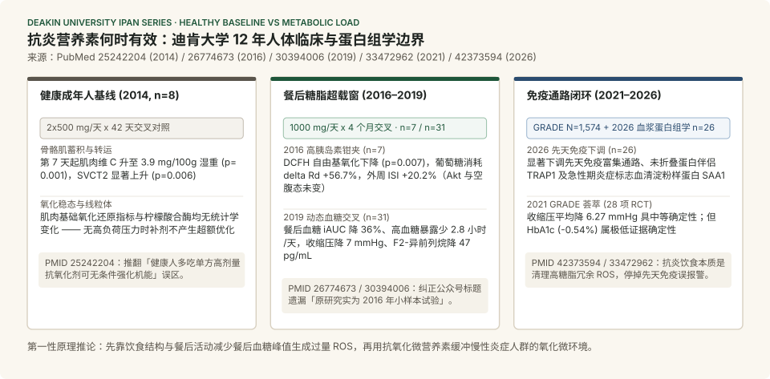

临床研究|每日1000mg维生素C，连续4月，糖尿病患者胰岛素敏感性提升20%，让…

1/1
免疫力不是越强越亢奋越好，而是“精准识别、按时熄火”的动态稳态：免疫系统分成先天免疫（中性粒细胞、巨噬细胞、急性期反应蛋白如 SAA1 与 C 反应蛋白 CRP，在几分钟到数小时内靠释放活性氧 ROS 与吞噬作用无差别清除病原和坏死碎片）和适应性免疫（T 细胞、B 细胞建立高特异性抗体记忆）。健康免疫力的本质在于平时保持低耗休眠，遭遇真实病原体或创伤时迅速拉响警报，任务结束后按时…